Arduino Cloud
Arduino Cloud is a powerful platform that enables users to connect, program, and monitor their IoT projects effortlessly.
Dashboards are the face of Arduino Cloud, the primary interface users interact with.
Yet, while the platform itself has evolved, the UX/UI of Dashboards had remained unchanged for years.
It was time to finally give them some well-deserved love.
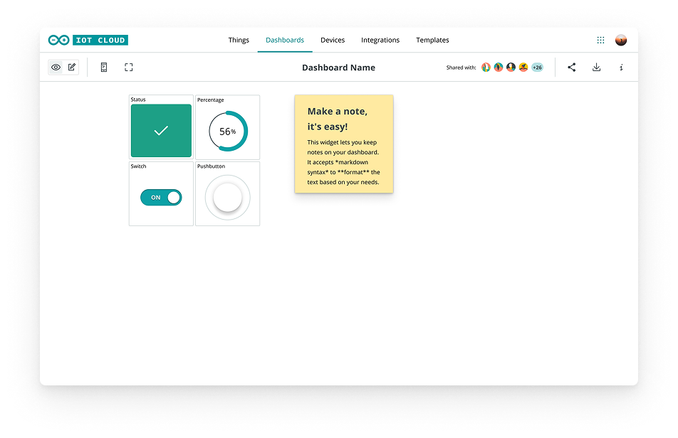
before redesignWe needed to simplify the existing interface, reduce the complexity shown to users, while, at the same time, set a strong baseline for future scalability and evolution of the product.
recordings & in-product feedback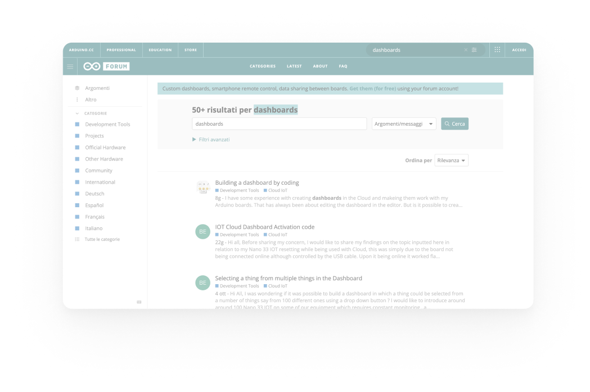
forum shadowing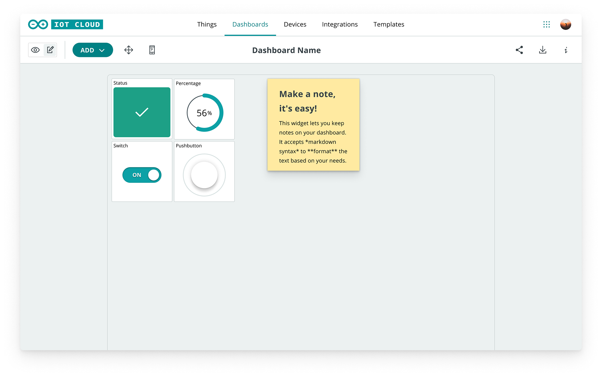
old UI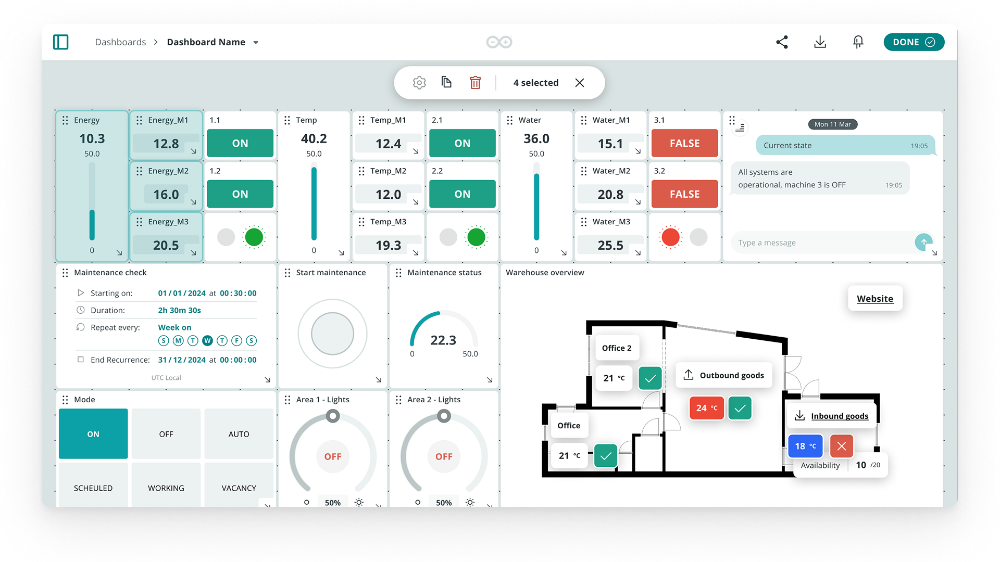
new UITo reach our goal the first step has been to understand what could be improved and why.
Research was conducted on both new and recurring users, globally, on various levels:
- Desk Research on previous Usability Reports
- Task Analysis during on-going user testing
- Hotjar Recordings and Heat maps analysis (≈700k sessions over the previous 6 months)
- 1 Expert review of the whole UJ (internal)
- Benchmark on 4 main competitors
- Shadowing on Arduino Forum (conversations about Dashboards or widgets)
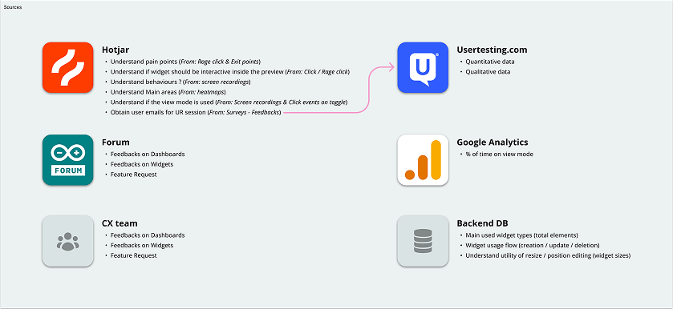
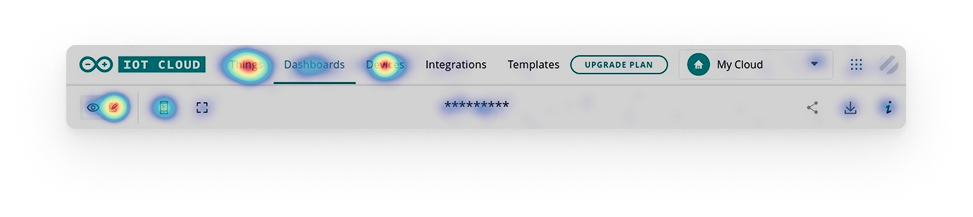
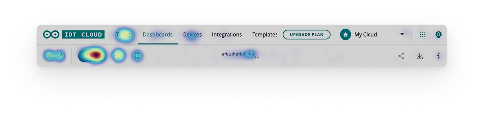
After the research, we decided to focus on separating the 2 core moments of the user journey: building and interacting.
We reduced modalities from 4 to 2, also redesigning the switch interaction to improve its clarity & predictability.
Finally, we opted for a progressive disclosure approach:
- In View mode, only widgets are visible
- In Edit mode, a toolbar with two states was designed to be future-proof. Ready to be the home of more advanced actions as the product evolves.
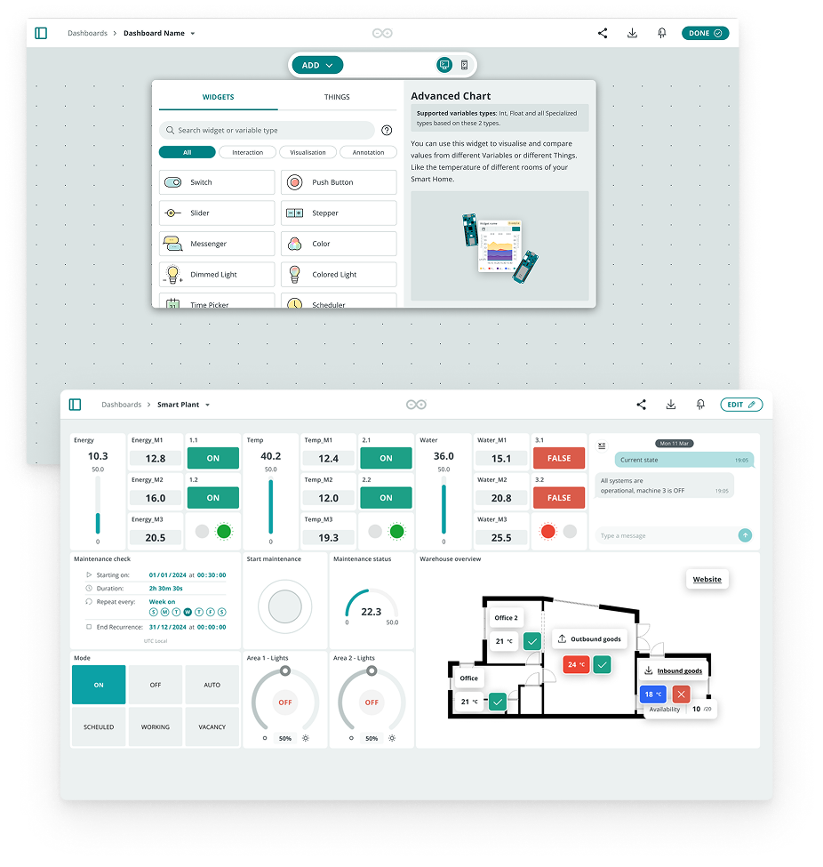
edit mode, then view modeOur goal was to minimize distractions and deliver a quick, effective UX, while improving coherence with the new Cloud ecosystem.
Validation ran in two ways: an internal testing session, and a Hotjar survey using the CSAT framework with open-ended questions, to spot issues and collect real user feedback directly in the product.
This was the first structured satisfaction measurement for our product — it now serves as the baseline to track every future iteration against.
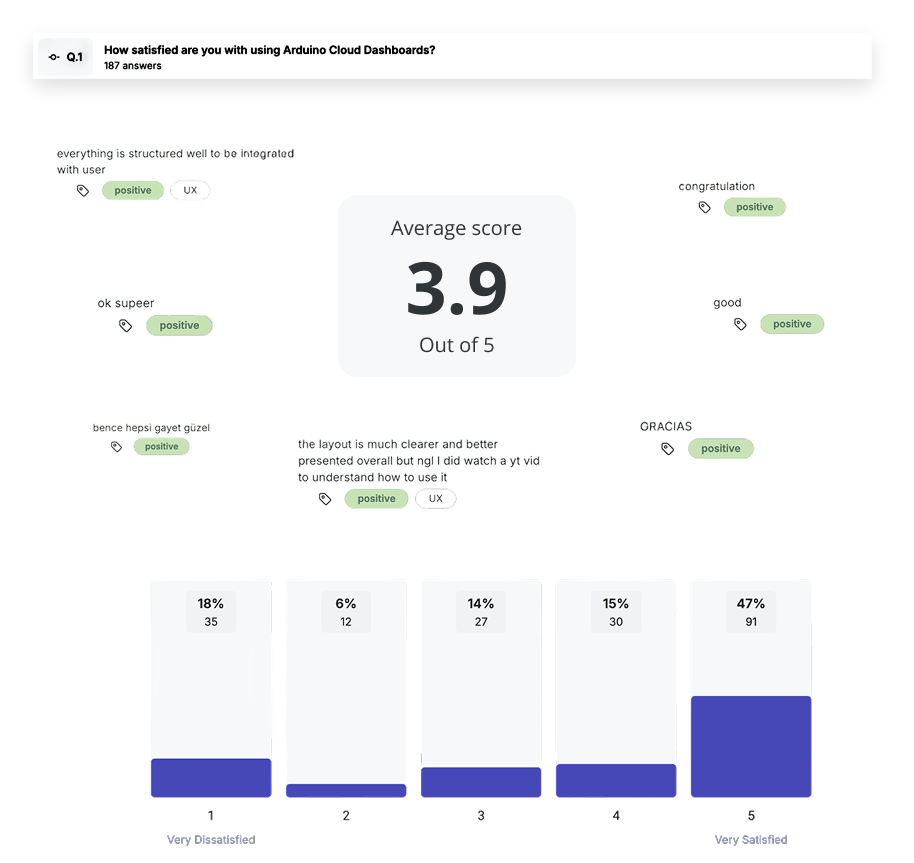
average score 3.9 / 5